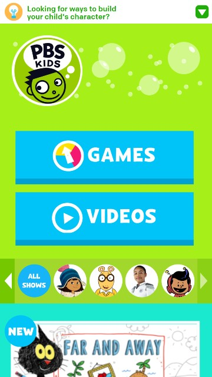
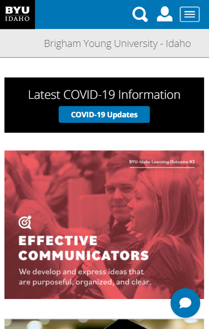

Clean Design
Google Fonts API

Google Fonts API has a good use of white-space making it have a clean design. The spacing around all the objects allows people who are viewing the page to stay calm when looking for a font.
Clean design comes mostly from the fact that all the fonts are separated into boxes and have spacing between them it just makes it more simple.
Repetition
PBS Kids

The Principle of Repetition is applied when the same or similar elements are used throughout a design. It portraits a sense of harmony and consistency.PBS KIDS home page is a perfect example of repetition in design. The logo's circle shape is also utilized on the icons throughout the site.
Rule of Thirds
Brigham Young University - Idaho
The image at the bottom of the screenshot follows the "Rule of Thirds", the focal point (the woman's face) is off to the right and the text (another focal point) is off to the left.
When images and the text are aligned in that way, it, for one, makes it easier to see the focus of the image as well as being able to read the text, which is probably the reason why both elements were place on the page.